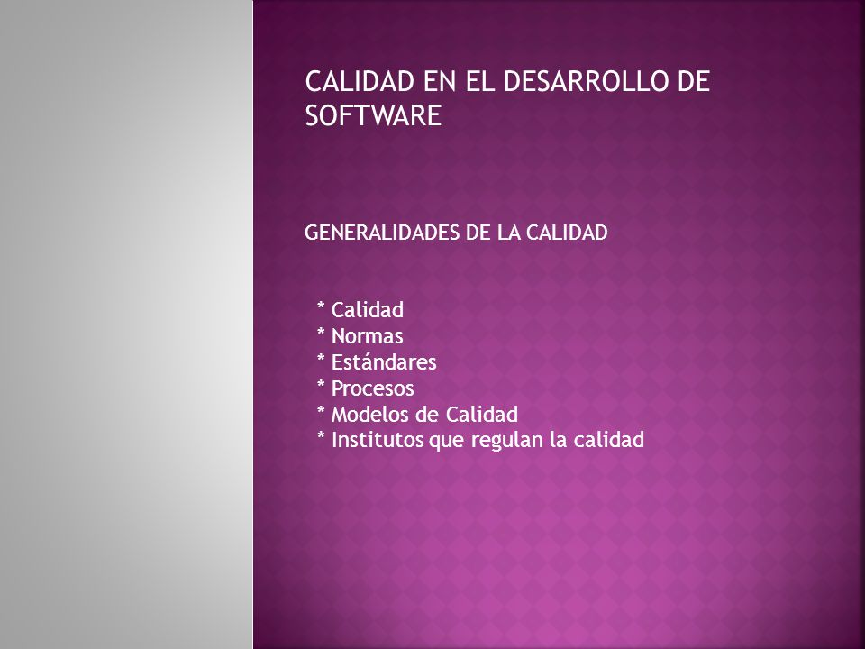

Es importante conocer los conceptos y características acerca de lo que es la calidad de software, y en cuanto a los modelos de calidad de software, su estructura y enfoque.
El término calidad de software se refiere al grado de desempeño de las principales características con las que debe cumplir un sistema computacional durante su ciclo de vida, dichas características de cierta manera garantizan que el cliente cuente con un sistema confiable, lo cual aumenta su satisfacción frente a la funcionalidad y eficiencia del sistema construido. El concepto de calidad de software, según Pressman (2010) se asocia a la "concordancia con los requisitos funcionales y de rendimiento explícitamente establecidos con los estándares de desarrollo plenamente documentados y con las características implícitas que se espera de todo software desarrollado profesionalmente", con base en los requisitos funcionales y no funcionales identificados en la etapa de análisis del sistema, insumo principal para implementar dichos requisitos con los atributos mínimos de calidad, fomentando la aplicación de procesos estandarizados y criterios necesarios en cada una de sus etapas, así se fomenta que el avance en el ciclo de vida del software minimice el riesgo de fracaso del proyecto. Por su parte, el Instituto de Ingenieros Eléctricos y Electrónicos (IEEE, 1990) define calidad de software como "el grado con el que un sistema, componente o proceso cumple los requerimientos especificados y las necesidades o expectativas del cliente o usuario", denotando que el énfasis radica en los requisitos específicos del sistema y en la búsqueda de la satisfacción del cliente. Para garantizar la calidad de software es importante implementar algún modelo o estándar de calidad que permita la gestión de atributos en el proceso de construcción de software, teniendo en cuenta que la concordancia de los requisitos y su construcción son la base de las medidas de calidad establecidas.
Aunque modelo y metodología distan en su definición, se rescata la cita dada por Moszkowitz (2010) en la que presenta una metodología que permite a cualquier organización realizar una autoevaluación o autodiagnóstico, por medio de una revisión sistemática de sus estrategias y prácticas de gestión. En el caso de la calidad de software el modelo debe ir enfocado a hacer seguimiento y evaluación a cada etapa de construcción del producto software. Por otro lado se menciona (Scalone, 2006) que los modelos de calidad son aquellos documentos que integran la mayor parte de las mejores prácticas, proponen temas de administración en los que cada organización debe hacer énfasis, integran diferentes prácticas dirigidas a los procesos clave y permiten medir los avances en calidad. Esta definición, enfocada a la calidad del software, identifica que la organización debe contar con un proceso que como soporte al mismo lleve una documentación, y se valga de distintas prácticas definidas en el modelo, dando apoyo a la organización para tener una mejora continua y ser más competentes, para así poder medir la calidad y brindar productor o servicios de alto nivel. En el ámbito de la construcción de software, el modelo de calidad debe permitir evaluar el sistema, bien sea cualitativa o cuantitativamente, y de acuerdo con esta evaluación la organización podrá proponer e implementar estrategias que permitan la mejora del proceso dentro de las etapas de análisis, diseño, desarrollo y pruebas del software.
Los modelos de calidad de software generalmente están estructurados como se muestra en la Figura 1 (Scalone, 2006) y (Bautista, 2012), donde se pueden tener diversos factores de calidad que a su vez se componen de criterios que son evaluados por métricas, con el propósito de abordar la evaluación desde lo general a lo particular, y permitir la reducción de la subjetividad en la asignación de un valor, ya sea cuantitativo o cualitativo.
La calidad de un sistema software debe ser programada desde el inicio del proyecto, y posteriormente en cada etapa del proceso de desarrollo se debe llevar a cabo el control y seguimiento de los aspectos de calidad, para minimizar los riesgos y ofrecer soporte continuo, se garantiza así un óptimo nivel de cumplimiento de los factores de calidad, teniendo en cuenta que si en alguna de las etapas se deja de lado la verificación de los factores y criterios es posible que se presente deficiencia en alguno de éstos y disminuirá el nivel de calidad no solo del proceso, sino también del producto en desarrollo.
La principal finalidad del modelo de calidad de producto es especificar y evaluar el cumplimiento de criterios del producto, para lo cual se aplican medidas internas y/o medidas externas (Bevan, 2010). Por esta razón, algunas normas y estándares han definido la calidad a nivel de producto en tres tipos: interna, externa y en uso (Rodríguez, 2016). Este enfoque está orientado a verificar el cumplimiento de las características que permitan alcanzar la satisfacción del cliente en cuanto a los requisitos definidos en las etapas iniciales del proceso de desarrollo.
Es importante resaltar que aunque en diferentes escenarios se utilizan los términos usabilidad y calidad en uso, con el mismo propósito y de forma intercambiable tienen significados distintos, principalmente porque el concepto de calidad en uso es más amplio y abarca más elementos que la usabilidad (Covella, 2005), y esta última es una de las características de calidad de un producto software. La calidad en uso se define como el "conjunto de atributos relacionados con la aceptación por parte del usuario final y seguridad", y está basada en la eficacia, productividad, seguridad y satisfacción, según ISO/IEC 9126.